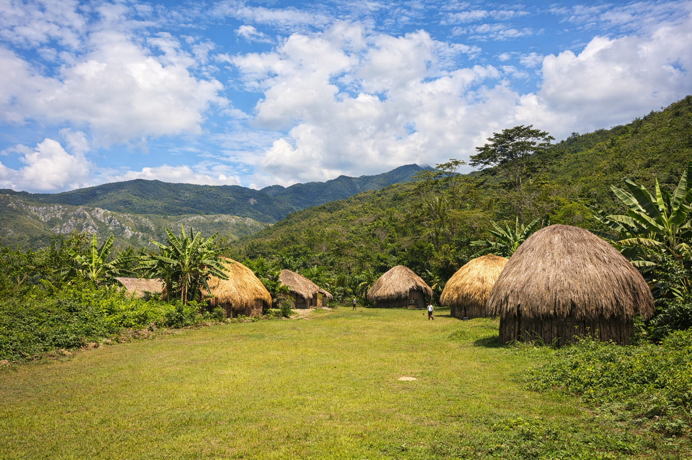

UNESCO Biosphère
55k
Archipel des Bijagós
88 îles magiques, sanctuaire de biodiversité et de cultures sacrées

RetourUn labyrinthe d'îles sacrées et de mangroves sauvages
La Guinée-Bissau est l'un des secrets les mieux gardés d'Afrique de l'Ouest, une terre où la nature et les traditions ancestrales règnent en maîtres. Son joyau absolu est l'archipel des Bijagós, composé de 88 îles dont la richesse écologique est classée Réserve de Biosphère par l'UNESCO. Ici, vous découvrirez les rares hippopotames marins de l'île d'Orango, les sites de ponte des tortues vertes à João Vieira et une culture matriarcale unique au monde. Entre les vestiges coloniaux mélancoliques de Bolama, l'effervescence du Gumbe à Bissau et les forêts primaires de Cantanhez abritant des chimpanzés, la Guinée-Bissau offre une aventure humaine et sauvage d'une rare intensité.
Découvrez les 15 sites légendaires de Guinée-Bissau
88 îles magiques, sanctuaire de biodiversité et de cultures sacrées

Le centre névralgique de l'archipel, ses plages de rêve et son ambiance locale

Le seul endroit au monde pour observer les rares hippopotames marins

Ruines coloniales mélancoliques et architecture portugaise déclinante

Le coeur historique de la capitale avec ses maisons colorées et son port

L'île du luxe et de la détente, offrant les plus beaux éco-lodges de l'archipel

Forêt primaire abritant des chimpanzés, des singes et une flore luxuriante

Principal site de nidification des tortues vertes en Afrique de l'Ouest

Plages sauvages et isolées bordées de dunes et de forêts de pins

Ancien comptoir colonial et centre de mémoire de la traite transatlantique

Centre de la culture Pepel, réputé pour ses tissages traditionnels 'Pano de Pente'

La plus grande réserve d'eau douce du pays, refuge pour les oiseaux migrateurs
Une étendue infinie de sable blanc et de cocotiers au sud de Bubaque
Carrefour commercial majeur et coeur de la culture Fula
Ville historique sur les rives du fleuve Cacheu, riche en traditions locales
L'âme des Bijagós et les rythmes du Gumbe.
La Guinée-Bissau est une mosaïque culturelle fascinante où coexistent plus de 20 ethnies (Balantes, Fulas, Mandingues, Pepels, Bijagós, etc.). L'archipel des Bijagós conserve une culture animiste puissante, structurée par des rituels d'initiation et un respect profond pour le monde des esprits. À Bissau, la capitale, le Gumbe (musique et danse) exprime la joie de vivre et la résilience du peuple bissau-guinéen. L'histoire du pays est marquée par une lutte héroïque pour l'indépendance menée par Amílcar Cabral, faisant de cette nation un symbole de fierté et de liberté en Afrique.
Une société matriarcale unique, où les femmes jouent un rôle prédominant dans la vie sociale et religieuse.
Rythme national mélangeant percussions traditionnelles et influences créoles, l'âme des fêtes locales.
L'héritage d'Amílcar Cabral et l'une des luttes anticoloniales les plus marquantes du XXe siècle.
Tissages traditionnels d'une finesse rare, porteurs de symboles et utilisés lors des cérémonies sacrées.

L'artisanat authentique de Guinée-Bissau. Des masques Bijagós aux tissages sacrés.
 Sacré
Sacré
Réplique artisanale des masques zoomorphes utilisés lors des cérémonies d'initiation dans l'archipel.
 Tradition
Tradition
Tissu traditionnel tissé à la main, symbole de prestige et d'identité culturelle en Guinée-Bissau.
 Gourmet
Gourmet
La Guinée-Bissau produit parmi les meilleures noix de cajou au monde, grillées et salées à la perfection.
Sculpture fine représentant des scènes de la vie quotidienne ou des divinités Bijagós.
Huile de palme rouge pure, base indispensable de la gastronomie bissau-guinéenne.
Sélection des meilleurs rythmes Gumbe pour emporter l'ambiance de Bissau avec vous.

Bissau, Grand Standing

Bissau, Moderne & Chic

Rubane, Paradis Éco-Luxe

Bubaque, Pêche & Détente

Bijagós, Immersion Nature

Bissau, Confort & Histoire
La cuisine bissau-guinéenne est un mélange savoureux de produits de la mer et de sauces onctueuses à base de palme et de cacahuètes.
Ragoût de viande ou poisson dans une sauce onctueuse à la cacahuète (mancarra).
Poulet mariné au citron, à l'ail et au piment, puis grillé ou mijoté.
Poisson frais du jour grillé au feu de bois et servi avec une sauce oignons-citron.
Riz cuit avec de l'huile de palme rouge, un accompagnement riche et coloré.
Ragoût de poisson séché et fumé avec des légumes et de l'huile de palme.
Riz blanc servi avec une sauce gombo et de la viande ou du poisson.
Langoustes, crabes et crevettes géantes fraîchement pêchés dans l'archipel.
Boisson traditionnelle récoltée à la cime des palmiers, douce et rafraîchissante.
Boisson verte et vitaminée réalisée à partir du fruit du baobab local.
Le snack national : noix de cajou locales, croquantes et pleines de saveurs.
Douceur sucrée à base de noix de coco fraîche râpée, héritage de la pâtisserie créole.
Chèvre marinée et cuite lentement aux épices, un plat de fête très apprécié.
Vibrez au rythme de la Guinée-Bissau à travers ses célébrations colorées.
Le plus grand événement du pays (Février), explosion de couleurs, de masques ethniques et de rythmes Gumbe.
Rituels d'initiation sacrés pratiqués dans les villages, coeur de la transmission culturelle Balante et Bijagó.
Célébration nationale (24 Septembre) avec défilés et concerts hommage à Amílcar Cabral.
La période idéale pour visiter l'archipel des Bijagós et les parcs nationaux. Le ciel est bleu, la mer est calme et les températures sont agréables.
Pluies tropicales intenses, surtout en août. La nature devient luxuriante, mais certains déplacements vers les îles peuvent être difficiles en raison de la houle.
Pays accueillant. Vigilance normale à Bissau (marchés). Dans les îles, respectez les lieux sacrés ('Iran') et demandez toujours l'autorisation avant de photographier.
Vaccin fièvre jaune obligatoire. Traitement antipaludique indispensable. Buvez exclusivement de l'eau en bouteille. Infrastructures médicales limitées.
Visa obligatoire pour la plupart des nationalités. Peut s'obtenir aux ambassades ou parfois à l'arrivée (vérifiez les conditions actuelles).
Franc CFA (XOF). L'économie repose sur l'espèce. Peu de distributeurs acceptant les cartes internationales. Prévoyez des Euros pour le change.
Expert Archipel & Bijagós
Natif de Bubaque, Domingos connaît chaque île et secret de l'archipel. Il vous guidera dans le respect des traditions sacrées.
Experte Faune & Cantanhez
Spécialiste de l'observation des chimpanzés et des oiseaux, Aissatou vous fera découvrir la richesse des parcs nationaux.
Guide Culturel & Bissau
Passionné par l'histoire coloniale et la musique Gumbe, João vous fera vivre l'âme vibrante de Bissau Velho et Bolama.